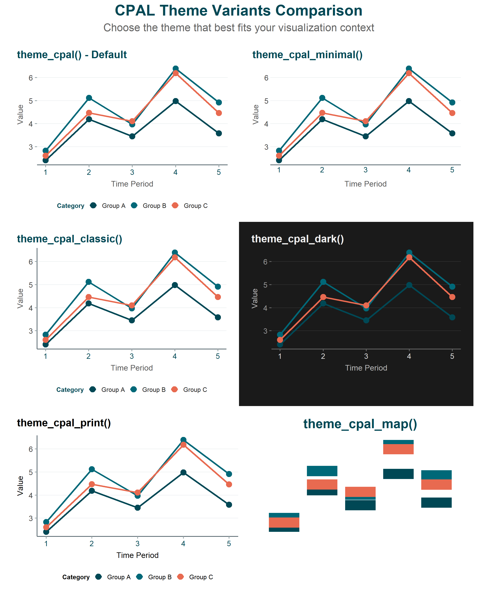

Show code
ggplot(mtcars, aes(x = wt, y = mpg, color = factor(cyl))) +
geom_point(size = 3) +
scale_color_cpal("main_3") +
labs(title = "Fuel Efficiency by Weight", color = "Cylinders") +
theme_cpal()
CPAL theming for ggplot2 and Highcharter visualizations
cpaltemplates provides consistent theming for both static (ggplot2) and interactive (Highcharter) visualizations. This page covers theme selection by use case, customization options, and utility functions for saving and branding your plots.
For chart-specific examples, see the ggplot2 Gallery and Highcharter Gallery.
ggplot(mtcars, aes(x = wt, y = mpg, color = factor(cyl))) +
geom_point(size = 3) +
scale_color_cpal("main_3") +
labs(title = "Fuel Efficiency by Weight", color = "Cylinders") +
theme_cpal()
library(highcharter)
hchart(mtcars, "scatter", hcaes(x = wt, y = mpg, group = factor(cyl))) |>
hc_cpal_theme() |>
hc_colors_cpal("main_3") |>
hc_title(text = "Fuel Efficiency by Weight")| Use Case | ggplot2 Theme | Highcharter Theme |
|---|---|---|
| General purpose | theme_cpal() |
hc_cpal_theme() |
| Dark mode / presentations | theme_cpal_dark() |
hc_cpal_theme("dark") |
| Print publications | theme_cpal_print() |
- |
| Academic papers | theme_cpal_classic() |
- |
| Minimal / clean | theme_cpal_minimal() |
- |
| Maps | theme_cpal_map() |
- |
| Shiny (reactive) | theme_cpal_switch() |
hc_theme_cpal_switch() |
theme_cpal() - Default ThemeThe primary CPAL theme with full customization options.
theme_cpal(
base_size = 16,
base_family = NULL,
style = "default",
grid = "horizontal",
axis_line = "x",
axis_title = TRUE,
legend_position = "bottom"
)| Argument | Options | Default |
|---|---|---|
base_size |
Numeric (font size in pts) | 16 |
grid |
“horizontal”, “vertical”, “both”, “none” | “horizontal” |
axis_line |
“x”, “y”, “both”, “none” | “x” |
legend_position |
“bottom”, “right”, “top”, “left”, “none” | “bottom” |
theme_cpal_minimal(), theme_cpal_classic(), theme_cpal_print(), and theme_cpal_map() are currently under review and may be modified.
| Theme | Description | Best For |
|---|---|---|
theme_cpal() |
Full-featured default | General use |
theme_cpal_dark() |
Dark background | Presentations, dark mode |
theme_cpal_minimal() |
Reduced visual elements | Clean, simple charts |
theme_cpal_classic() |
Axis lines on both axes | Academic style |
theme_cpal_print() |
High contrast | Print publications |
theme_cpal_map() |
No axes, minimal chrome | Geographic visualizations |
theme_cpal_dark() - Dark Modeggplot(mtcars, aes(x = wt, y = mpg, color = factor(cyl))) +
geom_point(size = 3) +
scale_color_cpal("main_3") +
labs(title = "Dark Theme Example", color = "Cylinders") +
theme_cpal_dark()
Set a CPAL theme as the default for your entire R session:
# Set dark theme for entire session
set_theme_cpal("dark")
# All subsequent plots use dark theme automatically
ggplot(mtcars, aes(x = wt, y = mpg)) +
geom_point() # No theme_cpal() needed
# Reset to ggplot2 default
theme_set(theme_gray())preview_cpal_themes()
hc_cpal_theme() - Apply Theme to ChartApply CPAL styling to any Highcharter chart.
hc_cpal_theme(hc, mode = "light")| Argument | Description |
|---|---|
hc |
A highchart object |
mode |
“light” or “dark” |
hchart(mtcars, "scatter", hcaes(x = wt, y = mpg)) |>
hc_cpal_theme() |>
hc_colors_cpal("main") |>
hc_title(text = "Scatter Plot") |>
hc_add_cpal_logo()| Function | Description |
|---|---|
hc_theme_cpal_light() |
Returns light mode theme object |
hc_theme_cpal_dark() |
Returns dark mode theme object |
hc_theme_cpal_switch(mode) |
Returns theme based on mode parameter |
hc_cpal_theme(hc, mode) |
Applies theme to a chart |
hc_colors_cpal() - Apply Color Palettehc_colors_cpal(hc, palette = "main", n = NULL)| Argument | Description |
|---|---|
hc |
A highchart object |
palette |
Palette name (e.g., “main”, “main_3”, “diverging”) |
n |
Number of colors (auto-detected if NULL) |
hc_add_cpal_logo() - Add Brandinghc_add_cpal_logo(hc, position = "bottom-right", mode = "light")For Shiny applications that support dark/light mode toggles.
theme_cpal_switch()theme_cpal_switch(mode = "light", ...)output$plot <- renderPlot({
ggplot(data, aes(x, y)) +
geom_point() +
theme_cpal_switch(input$dark_mode)
})make_theme_reactive()Create a reusable reactive theme:
server <- function(input, output, session) {
current_theme <- make_theme_reactive(input, toggle_id = "dark_mode")
output$plot1 <- renderPlot({
ggplot(data1, aes(x, y)) +
geom_point() +
current_theme()
})
}hc_theme_cpal_switch()output$chart <- renderHighchart({
hchart(data, "column", hcaes(x = x, y = y)) |>
hc_add_theme(hc_theme_cpal_switch(input$dark_mode)) |>
hc_colors_cpal("main")
})save_cpal_plot()Save plots with standardized CPAL dimensions.
save_cpal_plot(
plot,
filename,
size = "default",
dpi = 300,
bg = "white",
...
)| Preset | Dimensions | Use Case |
|---|---|---|
"default" |
8 × 5 | General purpose |
"slide" |
10 × 5.625 | Presentations (16:9) |
"half" |
4 × 3 | Half-page figures |
"square" |
5 × 5 | Social media |
"wide" |
12 × 4 | Dashboards |
"tall" |
5 × 8 | Vertical layouts |
p <- ggplot(mtcars, aes(x = wt, y = mpg)) +
geom_point(color = "#007A8C") +
theme_cpal()
# Default size
save_cpal_plot(p, "plot.png")
# Presentation slide
save_cpal_plot(p, "slide.png", size = "slide")
# Custom dimensions
save_cpal_plot(p, "custom.png", size = c(10, 6))
# High-res print
save_cpal_plot(p, "print.png", dpi = 600)
# PDF output
save_cpal_plot(p, "plot.pdf")add_cpal_logo() - ggplot2Add the CPAL logo to any ggplot2 visualization.
add_cpal_logo(
plot,
position = "top-right",
size = 0.09,
logo_path = NULL
)| Argument | Description |
|---|---|
position |
“top-right”, “top-left”, “bottom-right”, “bottom-left” |
size |
Logo size as proportion of plot (0-1) |
Features: - Auto-detects white logo for dark themes - Maintains aspect ratio - Places logo outside the plot area
p <- ggplot(mtcars, aes(x = wt, y = mpg)) +
geom_point(color = "#006878", size = 3) +
labs(title = "Vehicle Fuel Efficiency") +
theme_cpal()
add_cpal_logo(p, position = "bottom-right")
hc_add_cpal_logo() - Highcharterhchart(data, "column", hcaes(x = x, y = y)) |>
hc_cpal_theme() |>
hc_add_cpal_logo(position = "bottom-right")check_plot_accessibility()Analyze a plot for accessibility issues.
check_plot_accessibility(plot, verbose = TRUE)Checks performed: - Text size (readable) - Color contrast (WCAG standards) - Colorblind safety - Data-to-ink ratio
p <- ggplot(mtcars, aes(x = wt, y = mpg, color = factor(cyl))) +
geom_point() +
scale_color_cpal("main_3") +
theme_cpal()
check_plot_accessibility(p)
#> ✓ All colors pass WCAG AA
#> ✓ Color palette is colorblind-safe
#> Overall: PASS| Function | Purpose |
|---|---|
theme_cpal() |
Default CPAL theme |
theme_cpal_dark() |
Dark background theme |
theme_cpal_minimal() |
Minimal styling |
theme_cpal_classic() |
Traditional with axis lines |
theme_cpal_print() |
Print-optimized |
theme_cpal_map() |
Geographic visualizations |
theme_cpal_switch() |
Reactive light/dark switching |
set_theme_cpal() |
Set session default |
preview_cpal_themes() |
Compare all themes |
save_cpal_plot() |
Save with standard dimensions |
add_cpal_logo() |
Add CPAL branding |
check_plot_accessibility() |
Check accessibility |
| Function | Purpose |
|---|---|
hc_cpal_theme() |
Apply CPAL theme to chart |
hc_theme_cpal_light() |
Light mode theme object |
hc_theme_cpal_dark() |
Dark mode theme object |
hc_theme_cpal_switch() |
Reactive theme switching |
hc_colors_cpal() |
Apply CPAL color palette |
hc_add_cpal_logo() |
Add CPAL branding |